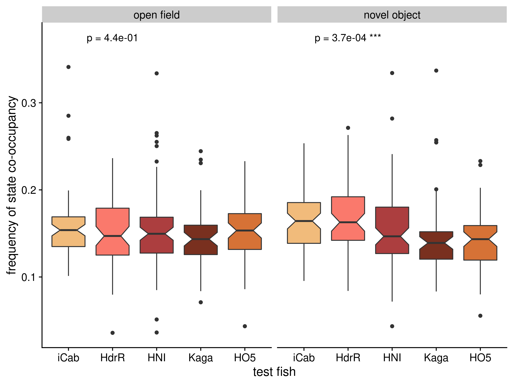

10 SGE co-occupancy
10.1 Setup
10.1.1 Load libraries
library(tidyverse)
#> ── Attaching packages ─────────────────── tidyverse 1.3.1 ──
#> ✔ ggplot2 3.3.6 ✔ purrr 0.3.4
#> ✔ tibble 3.1.7 ✔ dplyr 1.0.9
#> ✔ tidyr 1.2.0 ✔ stringr 1.4.0
#> ✔ readr 2.1.2 ✔ forcats 0.5.1
#> ── Conflicts ────────────────────── tidyverse_conflicts() ──
#> ✖ dplyr::filter() masks stats::filter()
#> ✖ dplyr::lag() masks stats::lag()
library(wesanderson)
library(rstatix)
#>
#> Attaching package: 'rstatix'
#> The following object is masked from 'package:stats':
#>
#> filter
library(cowplot)10.1.2 Set variables
IN = "/hps/nobackup/birney/users/ian/pilot/hmm_out/0.08/dist_angle/14.csv"
N_STATES = 14
VARIABLES = "distance and angle of travel"
INTERVAL = 0.08
OUT_PER_STATE = here::here("book/figs/sge/co-occupancy/dist_angle/0.08_14_cooc_box_heat_per-state.png")
OUT_BOX_ALL = here::here("book/figs/sge/co-occupancy/dist_angle/0.08_14_cooc_box_all.png")
# Create line recode vector
line_vec = c("iCab", "HdrR", "HNI", "Kaga", "HO5")
names(line_vec) = c("icab", "hdr", "hni", "kaga", "ho5")
# Create palette
new_pal = grDevices::colorRampPalette(wesanderson::wes_palette("GrandBudapest1"))
pal = new_pal(5)
names(pal) = line_vec
# Number of rows for plots
N_ROWS = 210.2 Read data and process
df = readr::read_csv(IN) %>%
# recode angle to sit between 0 and 360
dplyr::mutate(angle_recode = ifelse(angle < 0,
180 + (180 + angle),
angle))
#> Rows: 9152328 Columns: 15
#> ── Column specification ────────────────────────────────────
#> Delimiter: ","
#> chr (6): assay, ref_fish, test_fish, tank_side, quadrant...
#> dbl (9): date, time, frame, seconds, x, y, distance, ang...
#>
#> ℹ Use `spec()` to retrieve the full column specification for this data.
#> ℹ Specify the column types or set `show_col_types = FALSE` to quiet this message.
# Recode states by mean distance
rank_df = df %>%
dplyr::group_by(state) %>%
dplyr::summarise(mean_dist = mean(distance)) %>%
# rank
dplyr::arrange(mean_dist) %>%
dplyr::mutate(rank = 1:nrow(.))
recode_vec = rank_df %>%
dplyr::pull(rank)
names(recode_vec) = rank_df %>%
dplyr::pull(state)
# Recode `state`
df = df %>%
dplyr::mutate(state_recode = dplyr::recode(state, !!!recode_vec))
# Get SGE df
sge_df = df %>%
## add `line`
dplyr::mutate(line = dplyr::case_when(fish == "ref" ~ ref_fish,
fish == "test" ~ test_fish)) %>%
# recode `test_fish`
dplyr::mutate(test_fish = dplyr::recode(test_fish, !!!line_vec)) %>%
# order `test_fish`
dplyr::mutate(test_fish = factor(test_fish, levels = line_vec)) %>%
# rename and reorder assay
dplyr::mutate(assay = stringr::str_replace(assay, "_", " "),
assay = factor(assay, levels = c("open field", "novel object"))) %>%
# add `run` column
tidyr::unite(date, time, quadrant,
col = "run",
sep = "_",
remove = F) %>%
# add `indiv` column
tidyr::unite(date, time, quadrant, fish,
col = "indiv",
sep = "_",
remove = F)10.3 Co-occupancy boxplots – all states
cooc = sge_df %>%
# pivot wider to get cols for ref and test
tidyr::pivot_wider(id_cols = c("run", "assay", "test_fish", "seconds"),
names_from = fish,
values_from = state_recode) %>%
# group by run and assay
dplyr::group_by(run, assay, test_fish) %>%
summarise(TOTAL_ROWS = n(),
TOTAL_CONC = sum(ref == test, na.rm = T),
FREQ_CONC = TOTAL_CONC / TOTAL_ROWS) %>%
dplyr::ungroup()
#> `summarise()` has grouped output by 'run', 'assay'. You can
#> override using the `.groups` argument.
# Get KW stat
kw_all = cooc %>%
dplyr::group_by(assay) %>%
rstatix::kruskal_test(FREQ_CONC ~ test_fish) %>%
rstatix::adjust_pvalue(method = "fdr") %>%
rstatix::add_significance(p.col = "p.adj") %>%
#dplyr::mutate(p.adj = as.character(signif(p.adj, digits = 3))) %>%
# paste p-value and significance together
dplyr::mutate(p_final = dplyr::case_when(p.adj.signif == "ns" ~ paste("p =", scales::scientific(p.adj, digits = 2)),
TRUE ~ paste("p =", scales::scientific(p.adj, digits = 2), p.adj.signif)))
# Plot
box_all = cooc %>%
ggplot() +
geom_boxplot(aes(test_fish, FREQ_CONC, fill = test_fish), notch = T) +
facet_grid(cols = vars(assay)) +
geom_text(data = kw_all,
aes(x = "HdrR", y = 0.375, label = p_final),
size = 4) +
cowplot::theme_cowplot() +
scale_fill_manual(values = pal) +
guides(fill = "none") +
xlab("test fish") +
ylab("frequency of state co-occupancy") +
labs(fill = "test fish")
# Save
ggsave(OUT_BOX_ALL,
box_all,
device = "png",
width = 8,
height = 6,
units = "in",
dpi = 400)
knitr::include_graphics(here::here("book/figs/sge/co-occupancy/dist_angle/0.08_14_cooc_box_all.png"))
10.4 Co-occupancy boxplots – per state
FONT_SIZE = 10
cooc_per_state = sge_df %>%
# pivot wider to get cols for ref and test
tidyr::pivot_wider(id_cols = c("run", "assay", "test_fish", "seconds"),
names_from = fish,
values_from = state_recode) %>%
# group by run and assay
dplyr::group_by(run, assay, test_fish) %>%
dplyr::count(run, assay, ref, test) %>%
dplyr::add_count(run, assay, test_fish, wt = n, name = "nn") %>%
dplyr::ungroup() %>%
dplyr::mutate(FREQ_COOC = n / nn) %>%
# filter for same state co-occupancy
dplyr::filter(ref == test)
# Get KW stat
kw_per_state = cooc_per_state %>%
dplyr::group_by(assay, ref, test) %>%
rstatix::kruskal_test(FREQ_COOC ~ test_fish) %>%
rstatix::adjust_pvalue(method = "fdr") %>%
rstatix::add_significance(p.col = "p.adj") %>%
# paste p-value and significance together
dplyr::mutate(p_final = dplyr::case_when(p.adj.signif == "ns" ~ paste("p =", scales::scientific(p.adj, digits = 2)),
TRUE ~ paste("p =", scales::scientific(p.adj, digits = 2), p.adj.signif)))
# Plot
## Polar
polar = df %>%
# select random sample of 1e5 rows
dplyr::slice_sample(n = 1e5) %>%
# factorise `state_recode`
#dplyr::mutate(state_recode = factor(state_recode, levels = recode_vec)) %>%
ggplot() +
geom_point(aes(angle_recode, log10(distance), colour = state_recode),
alpha = 0.3, size = 0.2) +
coord_polar() +
facet_wrap(~state_recode, nrow = N_ROWS) +
scale_x_continuous(labels = c(0, 90, 180, 270),
breaks = c(0, 90, 180, 270)) +
scale_color_viridis_c(option = "inferno") +
guides(colour = "none") +
xlab("angle of travel") +
ylab(expression(log[10]("distance travelled in pixels"))) +
#ggtitle("HMM states") +
cowplot::theme_cowplot(font_size = FONT_SIZE) +
theme(plot.title = element_text(hjust = 0.5))
## OF
ASSAY = "open field"
box_per_state_of = cooc_per_state %>%
dplyr::filter(assay == ASSAY) %>%
ggplot() +
geom_boxplot(aes(test_fish, FREQ_COOC, fill = test_fish), notch = T) +
facet_wrap(vars(ref), nrow = N_ROWS) +
geom_text(data = kw_per_state %>%
dplyr::filter(assay == ASSAY),
aes(x = "HNI", y = 0.2, label = p_final),
size = 3) +
cowplot::theme_cowplot(font_size = 8) +
scale_fill_manual(values = pal) +
guides(fill = "none") +
xlab("test fish") +
ylab("frequency of state co-occupancy") +
ggtitle(ASSAY) +
theme(plot.title = element_text(hjust = 0.5)) +
ylim(0,max(cooc_per_state$FREQ_COOC))
## NO
ASSAY = "novel object"
box_per_state_no = cooc_per_state %>%
dplyr::filter(assay == ASSAY) %>%
ggplot() +
geom_boxplot(aes(test_fish, FREQ_COOC, fill = test_fish), notch = T) +
facet_wrap(vars(ref), nrow = N_ROWS) +
geom_text(data = kw_per_state %>%
dplyr::filter(assay == ASSAY),
aes(x = "HNI", y = 0.2, label = p_final),
size = 3) +
cowplot::theme_cowplot(font_size = 8) +
scale_fill_manual(values = pal) +
guides(fill = "none") +
xlab("test fish") +
ylab("frequency of state co-occupancy") +
ggtitle(ASSAY) +
theme(plot.title = element_text(hjust = 0.5)) +
ylim(0,max(cooc_per_state$FREQ_COOC))10.5 Co-occupancy heatmap
# Create df
cooc_heat = sge_df %>%
# pivot wider to get cols for ref and test
tidyr::pivot_wider(id_cols = c("run", "assay", "test_fish", "seconds"),
names_from = fish,
values_from = state_recode) %>%
dplyr::group_by(assay, test_fish) %>%
dplyr::count(assay, ref, test) %>%
dplyr::add_count(assay, test_fish, wt = n, name = "nn") %>%
dplyr::ungroup() %>%
dplyr::mutate(FREQ_COOC = n / nn)
# Plot
cooc_heat_plot = cooc_heat %>%
# recode NAs as character
dplyr::mutate(across(c(ref, test),
~as.character(.))) %>%
# replace NA with character
dplyr::mutate(across(c(ref, test),
~tidyr::replace_na(., "NA"))) %>%
# convert to factor for order
dplyr::mutate(across(c(ref, test),
~factor(., levels = c(seq(1:N_STATES), "NA")))) %>%
ggplot() +
geom_tile(aes(ref, test, fill = FREQ_COOC)) +
facet_grid(cols = vars(test_fish),
rows = vars(assay)) +
theme_cowplot(font_size = FONT_SIZE) +
theme(aspect.ratio = 1) +
#scale_x_di(breaks = unique(cooc_heat$ref)) +
#scale_y_di(breaks = unique(cooc_heat$test)) +
labs(fill = "Frequency\nof state\nco-occupancy\nwithin\nline-pairing") +
scale_fill_viridis_c(option = "plasma") +
xlab("reference fish state") +
ylab("test fish state")10.6 Compose final figure
final = cowplot::ggdraw() +
cowplot::draw_plot(polar,
x = 0, y= 0.7,
width = 1, height = 0.3) +
cowplot::draw_plot(box_per_state_of,
x = 0, y = 0.3,
width = 0.5, height = 0.4) +
cowplot::draw_plot(box_per_state_no +
theme(axis.text.y=element_blank(),
axis.ticks.y=element_blank(),
axis.line.y = element_blank()) +
ylab(NULL),
x = 0.5, y = 0.3,
width = 0.5, height = 0.4) +
cowplot::draw_plot(cooc_heat_plot,
x = 0, y = 0,
width = 1, height = 0.3) +
cowplot::draw_plot_label(c("A", "B", "C"),
x = c(0,0,0),
y = c(1, 0.7, 0.3))
#> notch went outside hinges. Try setting notch=FALSE.
#> notch went outside hinges. Try setting notch=FALSE.
#> notch went outside hinges. Try setting notch=FALSE.
#> notch went outside hinges. Try setting notch=FALSE.
#> notch went outside hinges. Try setting notch=FALSE.
#> notch went outside hinges. Try setting notch=FALSE.
#> notch went outside hinges. Try setting notch=FALSE.
#> notch went outside hinges. Try setting notch=FALSE.
#> notch went outside hinges. Try setting notch=FALSE.
#> notch went outside hinges. Try setting notch=FALSE.
#> notch went outside hinges. Try setting notch=FALSE.
#> notch went outside hinges. Try setting notch=FALSE.
#> notch went outside hinges. Try setting notch=FALSE.
#> notch went outside hinges. Try setting notch=FALSE.
#> notch went outside hinges. Try setting notch=FALSE.
#> notch went outside hinges. Try setting notch=FALSE.
#> notch went outside hinges. Try setting notch=FALSE.
#> notch went outside hinges. Try setting notch=FALSE.
#> notch went outside hinges. Try setting notch=FALSE.
#> notch went outside hinges. Try setting notch=FALSE.
#> notch went outside hinges. Try setting notch=FALSE.
#> notch went outside hinges. Try setting notch=FALSE.
#> notch went outside hinges. Try setting notch=FALSE.
#> notch went outside hinges. Try setting notch=FALSE.
#> notch went outside hinges. Try setting notch=FALSE.
#> notch went outside hinges. Try setting notch=FALSE.
ggsave(OUT_PER_STATE,
final,
device = "png",
width = 18,
height = 20,
units = "in",
dpi = 400)
knitr::include_graphics(here::here("book/figs/sge/co-occupancy/dist_angle/0.08_14_cooc_box_heat_per-state.png"))